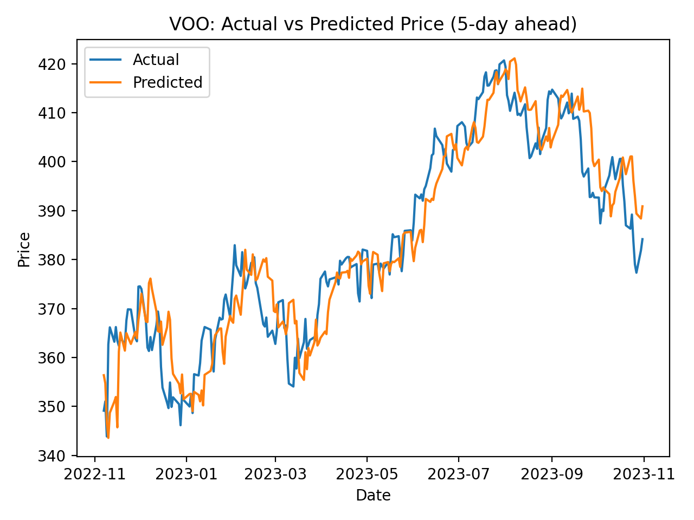
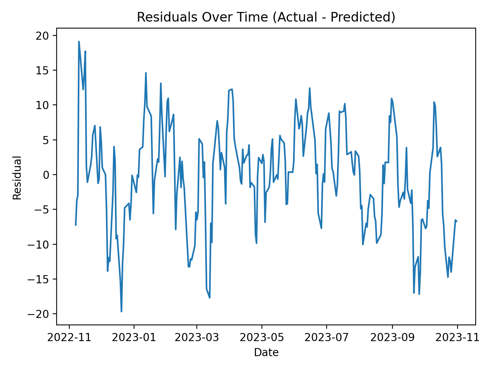
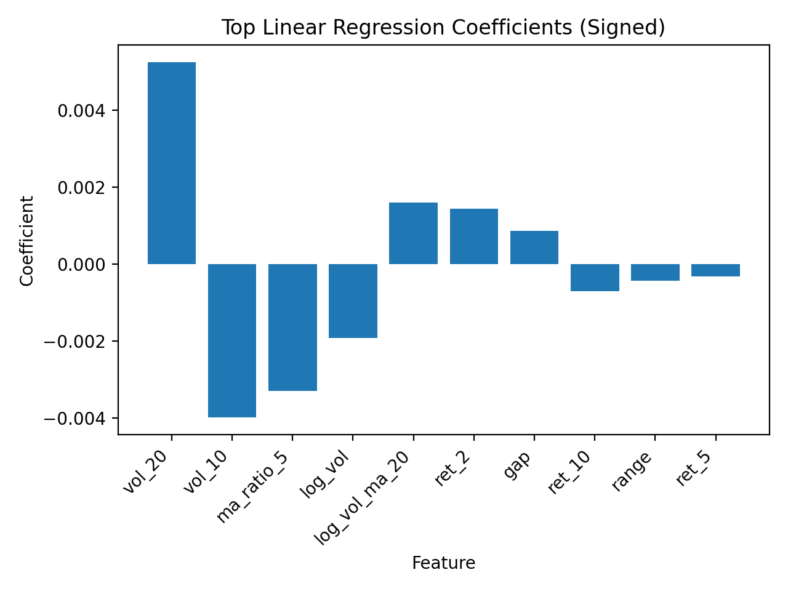

This project predicts the 5-trading-day ahead price movement of Vanguard S&P 500 ETF (VOO) using engineered technical features from historical OHLCV data. Performance is compared against a simple no-change baseline.
Model: Ridge Regression (linear regression with L2 regularization) trained on engineered features.
Instead of using raw price “as-is”, the dataset is transformed into signals that represent trend, momentum, volatility, and volume behavior.



data/VOO Stock Data.csvpython src/train.pypython src/make_plots.py (saves PNGs to reports/figures/)mkdir -p docs/assets && cp reports/figures/*.png docs/assets/